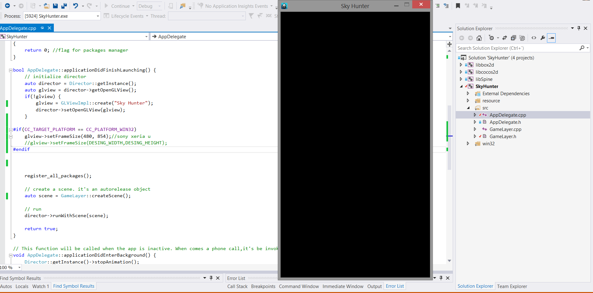

Capítulo 2 - Usando Sprite y configurando la pantalla
En este capítulo comenzaremos el desarrollo del juego SkyHunter, aprenderemos a configurar la pantalla y a usar Sprites. En cada apartado se proveerá un link de descarga de las clases y recursos usados, se recomienda al final de cada capítulo descargar y colocar esas clases en la carpeta Classes de tu proyecto para compilar sin problemas.
2.1 Estructura
Creamos el proyecto que usaremos en capítulos siguientes cocos new SkyHunter -p skyHunter.net.sytes.seryux -l cpp como ya sabemos SkyHunter será el nombre del proyecto, skyHunter.net.sytes.seryux el nombre de paquete para Android y cpp indica que usaremos el lenguaje de programación C++.
Una vez creamos el proyecto abrimos la solución de Visual Studio, para ello abrimos el archivo SkyHunter/proj.win32/SkyHunter.sln .

Como vemos, en la solución encontramos libcocos2d que es la librería de cocos, también encontramos libbox2d para física y libSpine para skeletal animations en 2d. A lo largo de estos tutoriales usaremos sobre todo libcocos2d.
Ahora echaremos un vistazo a src que en realidad se corresponde con la carpeta Classes de nuestro proyecto general de cocos. (Para crear clases nuevas, las crearemos directamente en la carpeta Classes y posteriormente las vincularemos a esta carpeta de la solución de visual studio para no tener problemas durante la compilación). Aquí vemos las clases de la plantilla del proyecto AppDelegate y HelloWorldSene.
AppDelegate.cpp
Esta clase class AppDelegate : private cocos2d::Application hereda de Application y es la clase que hará que nuestro juego y escenas sean inicializadas y puestas en ejecución. Aquí vemos que se llama al singleton Director para cargar la escena HelloWorld director->runWithScene(scene).Por el momento no indagaremos mucho más sobre esta clase.
HelloWorldScene.h
Con ver el header de esta clase es suficiente pues la implementación de la plantilla la borraremos y la haremos nosotros mismos. Esta clase hereda de public cocos2d::Layer al igual que todas nuestras escenas. Más adelante veremos cómo implementar una escena.2.2 Configuración de pantalla
Tras crear el proyecto, lo primero que haremos será borrar el contenido de nuestra clase HelloWorldScene.cpp y HelloWorldScene.h hasta dejarlos como veremos a continuación y posteriormente renombrarlos como GameLayer.cpp y GameLayer.h respectivamente.
GameLayer.h
GameLayer.cpp
Una vez hecho esto, configuraremos la pantalla del juego.
Como será un juego para móvil en orientación portrait (vertical), le diremos a cocos que nos muestre una pantalla de ese formato. En nuestro caso, le diremos a cocos que queremos una ventana de 480x854 glview->setFrameSize(480, 854) con esta directiva en AppDelegate.cpp. Si quisiéramos un juego con esta misma resolución en landscape (como si girásemos el móvil) basta con indicar 854x480. Si ejecutamos esto es lo que deberíamos de ver:

Como vemos añado una comparación antes de cambiar el tamaño de la pantalla CC_TARGET_PLATFORM == CC_PLATFORM_WIN32 para que el tamaño de pantalla que muestre cocos sea alterado solo si estamos desarrollando en win32 en este caso. Una vez lanzado en el móvil, este cambio no será efectivo.
La última modificación que haremos en esta clase será para decirle a cocos la resolución para la cual fue diseñado nuestro juego y de esta forma el framework automáticamente escalará las imágenes para adaptarlas a la pantalla sobre la que el juego se ejecuta.
El juego está diseñado para una resolución de 320x480 y así se lo indicamos a cocos glview->setDesignResolutionSize(DESING_WIDTH, DESING_HEIGHT, ResolutionPolicy::EXACT_FIT) con ResolutionPolicy::EXACT_FIT le decimos que escale las imágenes para ocupar el total de la pantalla teniendo en cuenta la resolución para la que están diseñadas.
Tras todo esto nuestra clase AppDelagate debe de quedar así:
AppDelegate.h
AppDelegate.cpp
Si has llegado hasta aquí, ya tienes tu aplicación configurada para comenzar a desarrollar. A partir de aquí, trabajaremos con Sprites y otros componentes, principalmente en nuestra clase GameLayer.cpp. Puedes descargar el código de la aplicación hasta el momento aquí y los recursos para el siguiente apartado aquí.